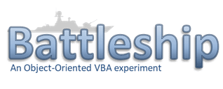

バトルシップ

⚙
⚙で相手を選んで［新しく始める］を押してください
－
－
戦況の記録
設定
対戦相手（次の対戦から）
Random（手当たり次第）
FairPlay（見つけたら沈める）
Merciless（手加減なし）
自分の盤（次の対戦から。グリッド1が先に撃つ）
グリッド1（先攻）
グリッド2（後攻）
表示
標準
画像
音
入
切
音の大きさ
相手が撃つまでの間
すぐ
短め（0.4秒）
ふつう（0.7秒）
ゆっくり（1.2秒）
戦績
過去の対戦を見る
戦績を消す
バトルシップ スマホ版
。記録と設定はこのスマホのブラウザの中にだけ残ります。
閉じる
新しく始める